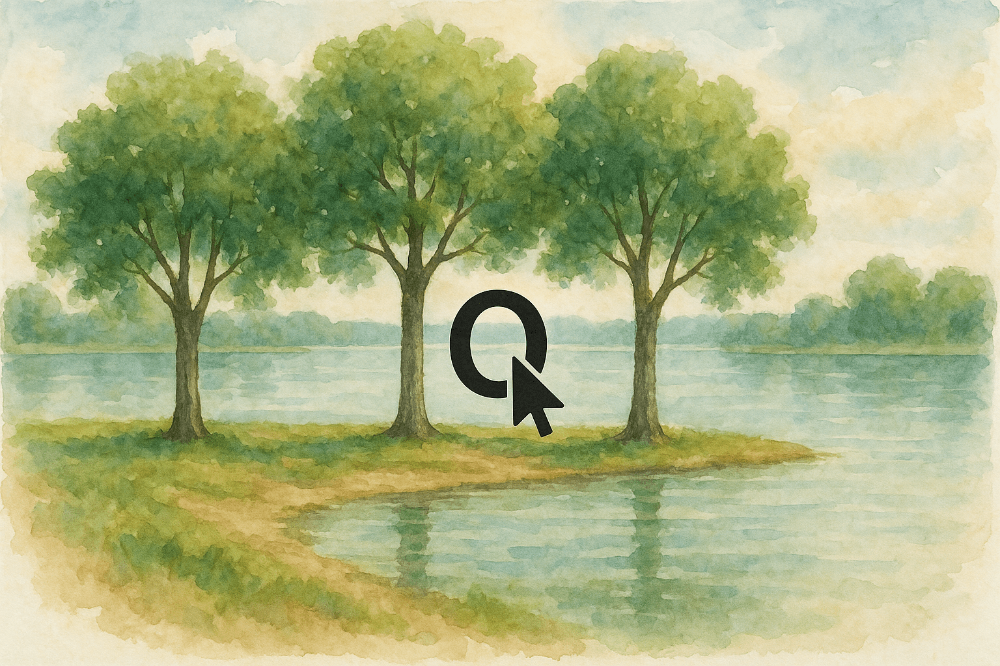
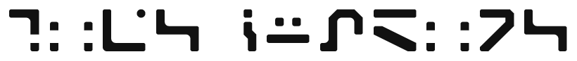
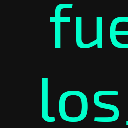
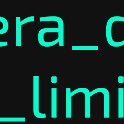
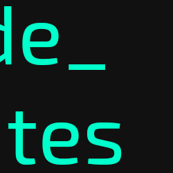

Notas del explorador
- Algunos movimientos gastan tiempo, otros no. Ir al espacio gasta 1 unidad de tiempo, y aterrizar en un planeta, otra más. Al pasar 7 unidades, el juego termina. Si muero, el juego empieza de nuevo.
- El sistema no finaliza correctamente al acabarse el tiempo, en su lugar se reinicia. Cada reinicio me devuelve al mismo punto, pero conservo mis memorias. Es como estar atrapado en un bucle temporal. ¡Debo encontrar el "destino final" para poder salir!
- Hay cuatro botones rojos. He de presionarlos todos dentro del mismo bucle para poder llegar al "destino final".
- El depredador de la selva detesta el sonido de los aplausos.
- El título del tornado te dice una fila que debes seleccionar, no pulsar.
- Un láser me envía al espacio sin gastar tiempo cuando introduzco una letra incorrecta en el panel de la cabaña de Initia.
- Bajo el lago de Initia hay un teletransportador que lleva a Okèanos, gastando solamente 1 de tiempo.
- Un terminal en un agujero en las cavernas ponía "Formulario 4 7 2 10".
- En Okèanos, cuando hay marea baja, se puede acceder a un ascensor.
- En Okèanos, cuando hay marea alta, se puede surfear al islote diminuto.
- En el islote de Okèanos hay un teletransportador que lleva a Gelora, gastando solamente 1 de tiempo.
- En la nave estrellada del núcleo de Tormentae, vi un vídeo que mostraba un cursor poniéndose encima de un recuadro azul.
- En el satélite de Tormentae aprendí información meteorológica crucial: Okèanos tiene marea baja en T≤1 y marea alta en T=5. Gelora tiene ventisca en superficie en T=5 y en atmósfera en T=6, pero deshielo en superficie en T=6. La conclusión es acceder a Gelora solo por teletransporte cuando deshiele.
- Vi este dibujo en la segunda zona de Volcanor:

- Vi esta imagen en la tercera zona de Volcanor:

- Encontré este cuadro en el satélite de Volcanor:

- Encontré este cuadro en la cueva de Gelora:

- Encontré este cuadro en una tabla en Aridex:

- "En el vacío del espacio, sigue el camino de la tabulación 7 veces e intenta 'entrar' para ir al séptimo planeta."
Hacer pasar el tiempo